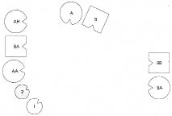
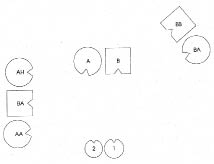
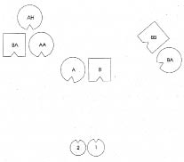

ANNA Ben köken ailemi dizmek istiyorum.
HELLINGER Diz.
ANNA Aile babam, annem, iki yaş büyük olan ablam ve benden oluşuyor.
HELLINGER Ya babanın ebeveyni ve ailesi?
ANNA Babamın ana babası daha ilk zamanlarından konsantrasyon kampına götürülerek orada öldürülmüş. Babam ve kız kardeşi onlardan ayrılmış ve hayatta kalmışlar. 1937’de İngiltere’ye gitmişler.
HELLINGER Ya annenin ebeveyni?
ANNA Annemin babası, anneannemle evlenmek için Yahudiliğe geçen bir Hıristiyan. Büyük ana babam ve annem, büyükbabamın kız kardeşi tarafından saklanarak kurtulmuşlar.
HELLINGER Yahudiliğe geçen büyükbaba çok önemli. Bu durumda, bir telafi olarak senin bir Almanla evliliğin başarılı olabilir. -Evet, doğru. Bunun bir telafi olabileceğini hissediyor musunuz? Bir örnek vereyim bu konuda:
Birisi, büyükbabasının bekar bir erkek olarak küçük bir yere gittiğini, oradaki en zengin çiftçinin tek çocuğu olan kızıyla evlendiğini anlatmıştı. Kadın Reformist kilisesine mensuptu, erkekse Katolik. Düğün günü, kızın ebeveyni dehşet içinde, Reformist kilisesinin değil de Katolik kilisesinin çanlarının çalmakta olduğunu gördü. Kadının ana babası aldatılmıştı. Erkeğin büyük ebeveyni de Katolik töreniyle evlenmişlerdi, çocukların hepsi Katolik’ti.
Adam bir gün kız kardeşine sordu: “Senin kızının adı neden Karin?” “Ah” diye yanıtladı kardeşi, “Katharina koyacaktık ama daha modern bir biçimi olsun istedik ve Karin koyduk adını.” Adamın zihninde bir ışık yandı: “Katharina bizim Reformist büyükannemizin ismiydi.” Kız kardeşinin aklına bu bağlantı hiç gelmemişti. Kendisi de bir Reformist ile Katolik usulü evlenmiş ve bütün çocukların Katolik olmasına karar vermişti. Ama sırrına kimsenin eremediği son derece esrarengiz bir biçimde -ancak adamın kız kardeşinin de kendisi hiç bilincinde olmaksızın açıkça ısrar etmesiyle- bu Karin Reformist olarak vaftiz edildi. Telafi buydu.
ANNA Ayrıldığım kocam Katolik, çocuklarım da vaftiz edildi.
HELLINGER Bu yerinde bir şey. Tamam.
HELLINGER Önce ana babanı, kendini ve kız kardeşini diz. Sonra da diğer önemli kişileri: Babanın ve annenin ebeveynlerini ve onları saklayan kız kardeşi.
1. Resim

B Baba
A Anne
1 İlk çocuk, kız
2 İkinci çocuk, kız (=Anna)
BB Babanın babası, konsantrasyon kampında ölmüş
BA Babaanne, konsantrasyon kampında ölmüş
AB Annenin babası, Yahudiliğe geçmiş
AA Anneanne, Yahudi, saklanması sayesinde hayatta kalmış
AH Annenin halası, annenin ebeveynini saklamış
HELLINGER Anne nasıl?
ANNE Ben iyiyim. Az önce, dizim sırasında iki kızımı gözden kaybettiğimde gerçek bir kayıp duygusu yaşadım.
HELLINGER Baba nasıl?
BABA Büyük bir enerji var ortada, bu da bir parça sıkıntı verici. Demin, ebeveynin konsantrasyon kampında öldüğünü duyduğumda, yeterince dikkat etmedim diye bir düşünce geçti aklımdan. Oldukça da objektiftim. Onların başına geleni gördüm. Kötü bir şey. Aynı anda da, yeterince dikkat etmedim, diye düşündüm; o halde bunu böylece kabul edebildim.
HELLINGER Abla nasıl?
İLK ÇOCUK Önce burada tek başıma dururken ana babama karşı sıcak bir duygu aktı içimden. Sonra yerim değiştirilirken bu sıcaklık azaldı. Ardından babamın ebeveyni gelince onlara doğru tehdit edici güçlü bir çekim hissettim. Kız kardeşimle kendimi gayet iyi hissediyorum. Diğer büyük ebeveynim de benim için bir denge unsuru. Yani burada gayet iyiyim.
HELLINGER Anna’nın temsilcisine Küçük kız kardeş nasıl?
İKİNCİ ÇOCUK Kendimi son derece kötü hissediyorum. Öfkeden kendimi kaybedebilirim. Buradaki herkesi cana yakın buluyorum, boğucu ölçüde cana yakın. Yegâne bağım, büyükbabanın kız kardeşine. Onu harika buluyorum. Ama diğer herkes benim için fazlasıyla cana yakın. Üzerinden bir şey atmak istercesine baştan aşağı silkelenir.
HELLINGER Kendini kaybetmek yolun daha kolay olanıdır.
İKİNCİ ÇOCUK Yüzleşmeye kıyasla mı demek istiyorsun?
HELLINGER Doğru.
İKİNCİ ÇOCUK Evet, bunun daha kolay olduğunu ben de hissediyorum.
BABANIN BABASI Tuhaf. Ayaklarım yerin altlarına doğru uzanırken bir yandan da havada yükseliyormuş gibiyim. Oğlum ve ailesine doğru sıcak bir akım var yüreğimde, diğer büyük ebeveyn ve kız kardeşe de dostça bir enerji akıyor. Ama onları bir topluluk halinde algılıyorum daha çok, bireysel olarak değil. İyi niyetle karışık bir duygu bu.
BABAANNE Garip bir şekilde kayıtsızım. Sanki bütün bu olup biten beni hiç ilgilendirmiyormuş gibi.
Hellinger resmi, çocukların ana babalarının karşısında duracağı şekilde değiştirir. Babanın öldürülen ebeveynini arka plana çeker.
2. Resim

ANNENİN BABASI Böyle çok daha iyi.
HELLINGER Babaya Senin için nasıl oldu böylesi?
BABA Daha fazla güç hissediyorum.
HELLINGER Ölmüşler yaşayanlara yer açmak zorunda.
ANNENİN BABASI Şimdi kendimi iyi hissediyorum. Demin, diğer büyük ebeveyn karşımda dururken arada bana iyi de gelen bir güç alanı vardı; kendimi güçlü hissettiriyordu bana. Onlar gittiğinde bu duygu da kayboldu. İki torunum benden çok uzaktaydı. Şimdi böyle karşımda olmaları iyi.
ANNEANNE Önceki yerimde kendimi bütün bu topluluğun anasıymışım gibi hissediyordum. Şimdi kocama daha fazla yönelebiliyorum.
ANNENİN HALASI Kalbim çok hızlı atıyor, ama bunun böyle iyi olduğunu da biliyorum.
Hellinger annenin ebeveyni ile halayı daha geriye çeker.
3. Resim

ANNENİN HALASI Böyle daha iyi. Burası en sakin yer.
İKİNCİ ÇOCUK Annemle babamın ayakları daha bir yerde sanki şimdi, onlarla daha rahat yüzleşebilirim artık. Onları görebiliyor, rahatça yönelebiliyorum. Büyük ebeveynlerle ilişkim zaten iyiydi. Yalnızca büyük halamı pek o kadar rahat göremiyorum.
HELLINGER Anneye Ebeveynin ve halanın daha arkanda olması senin için nasıl?
ANNE İyi.
HELLINGER Dışlanmış insanlarla ilişkimizle güç sahibi insanlarla ilişkimiz arasında büyük bir fark vardır. Güç sahibi olanlar daha çok arka planda kalırken dışlanmış olanlar ön plana çıkmak zorundadır. Buradaki herkes kabul görüyor. Onurlandırılıyorlar. Diğerleri içinse hayat devam ediyor. Yaşanmış kötülük böylece artık geride kalabilir.
Anna’ya Pekâlâ, şimdi kendi yerini al.
Anna dizimde yerini alır ve ağlamaya başlar.
HELLINGER Gözlerini açık tut ve herkese sevgiyle bak.
Anna başıyla onaylar ve herkese bakar.
HELLINGER Tamam, bu kadar.